UX/UI DesignWeb
Creator's Guild
Studio Midhall
Studio Midhall's Shattered Isles, the expansion for the board game Beast, was successfully crowdfunded in 2023. One of the stretch goals promised during the campaign was a dedicated website where players could create their own Contracts, Beasts and Hunters, adding replayability to the game through community-driven content.
An initial version of the tool was released shortly after the campaign, but it only allowed the creation of Contracts. Although fully functional, the experience lacked usability, discoverability, and responsiveness. There was a need to rethink and scale this early build into a more polished creation platform, eventually named the Creator's Guild.
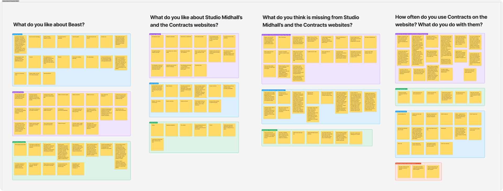
User Research, Information Architecture & Flows
To understand pain points and expectations, we asked members of the community who had been using the original Custom Contract tool about their experience. These conversations informed the new information architecture for the Studio Midhall website and defined how the Creator's Guild would integrate with player accounts and the main brand ecosystem. Establishing clear categories for Contracts, Beasts, and Hunters helped simplify navigation, while new features such as tagging, sorting and search addressed core usability gaps.
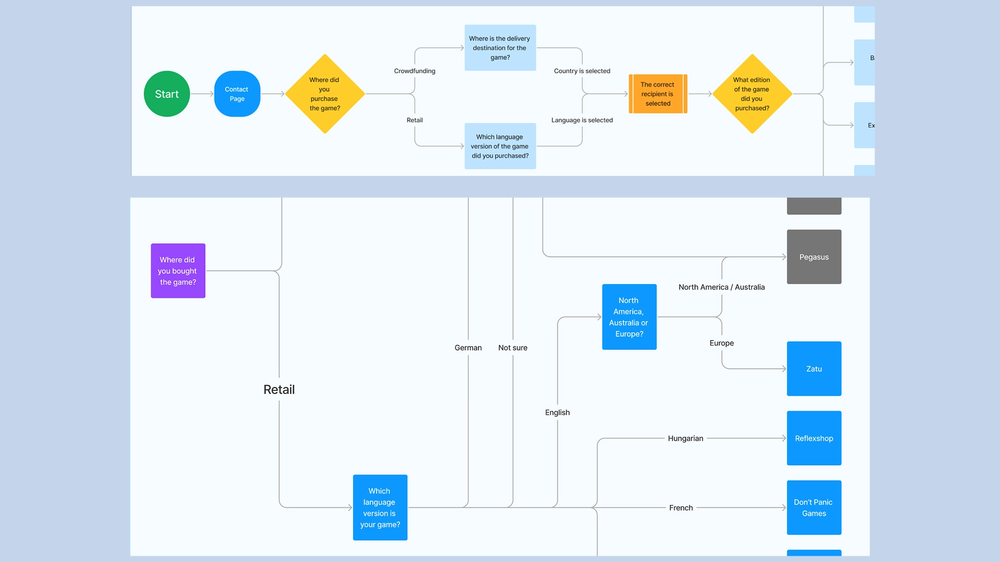
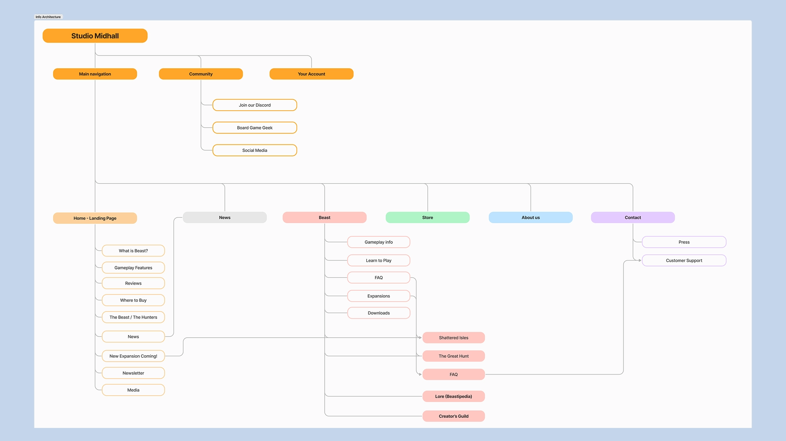
Wireframes, Look & Feel
With structure and features defined, we moved into wireframing for both desktop and mobile. The goal was to clarify hierarchy — what content mattered most — and to balance the familiarity that players had with the print material with a digital environment. For the visual identity, we drew inspiration from Studio Midhall's existing tone: dark fantasy, atmospheric, and immersive. Typography, colours, and image treatments were selected to feel cohesive with previous Beast materials, while still supporting a clean and functional creation interface.
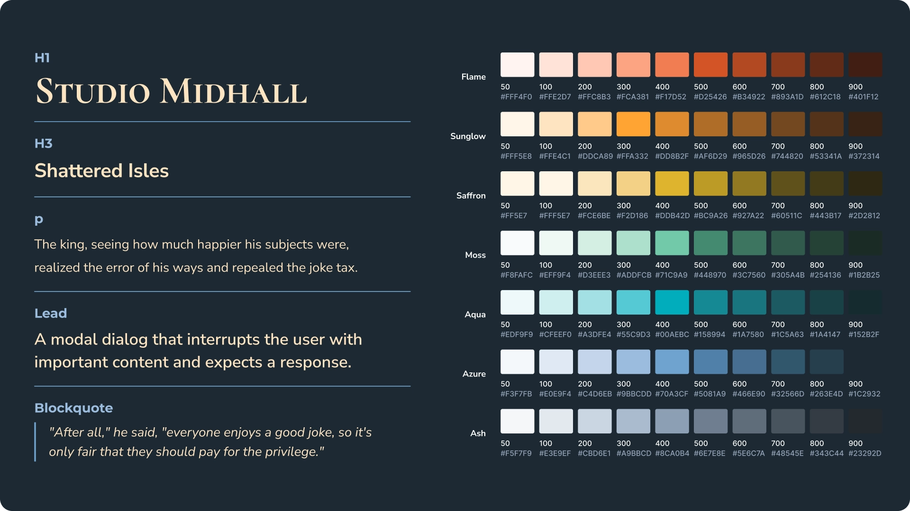
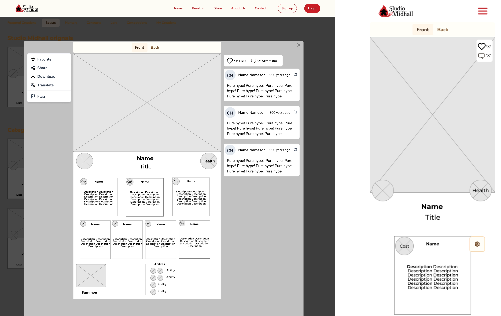
Final Design
The final Creator's Guild allowed players to create not just Contracts, but also new Beasts and Hunters. It worked seamlessly across desktop and mobile and all existing user-created Contracts from the older system were successfully imported. Quality-of-life improvements transformed the experience: users could now tag creations, filter and sort results, manage translations, and generate print-friendly versions of their work.
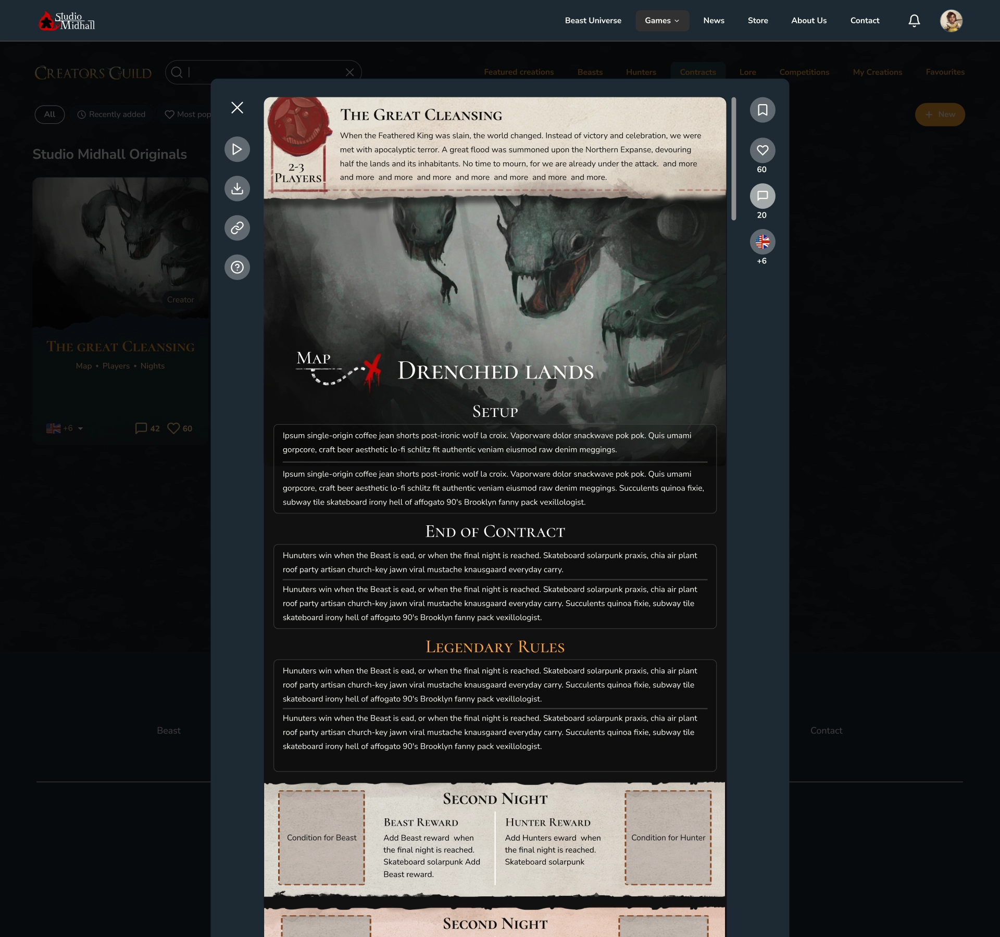
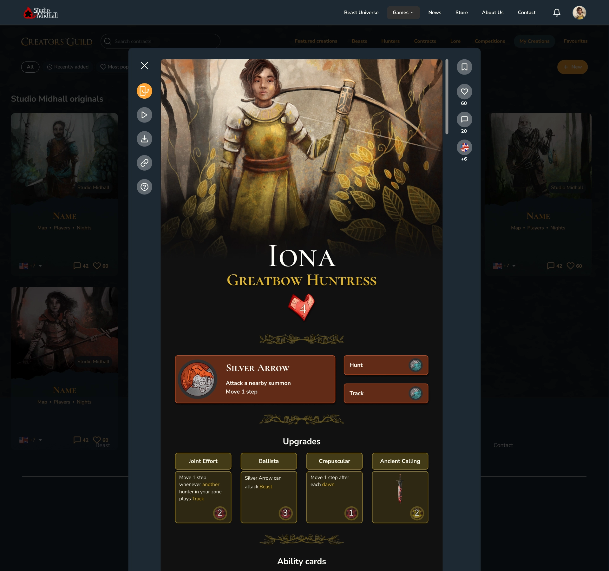
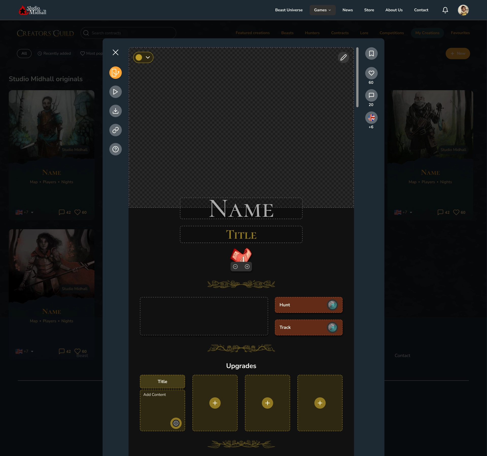
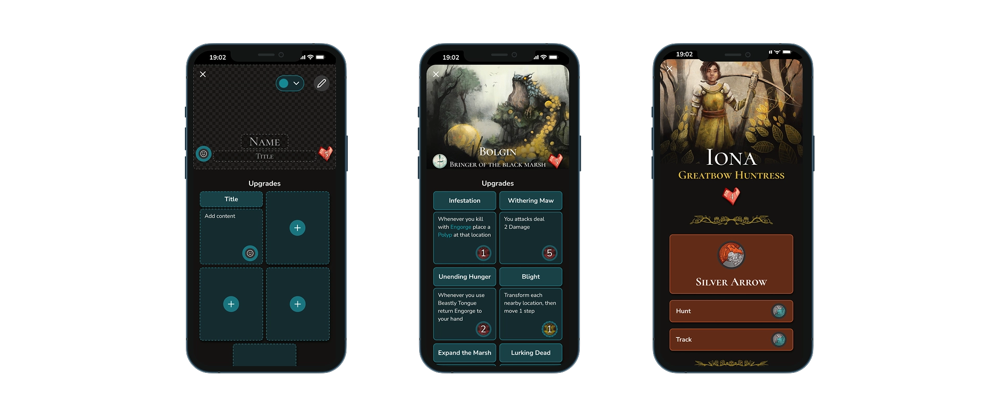
Physical print support was also implemented, since many board gamers prefer playing with printed cards.
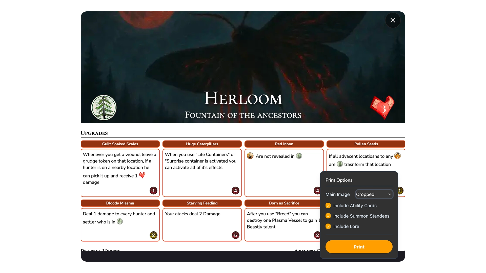
Bundle Offering
Both the previous version and the new Creator's Guild were a success. Thus, the best creations were bundled in a print version as one of the crowdfunding rewards.
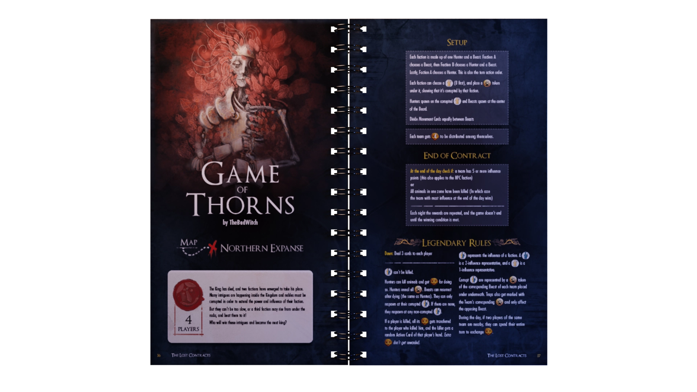
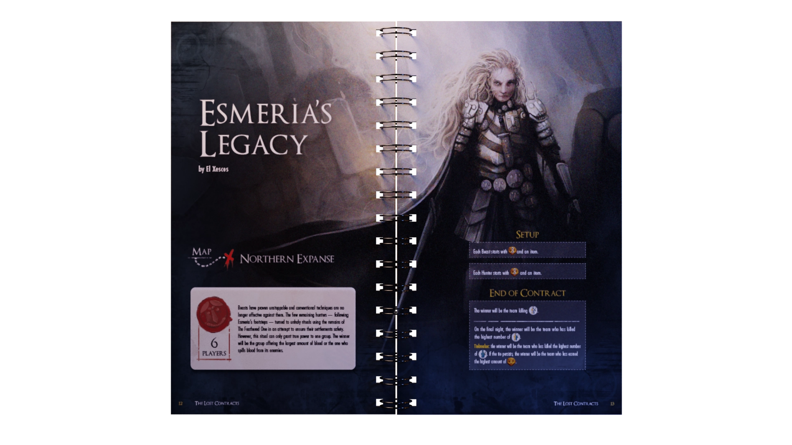
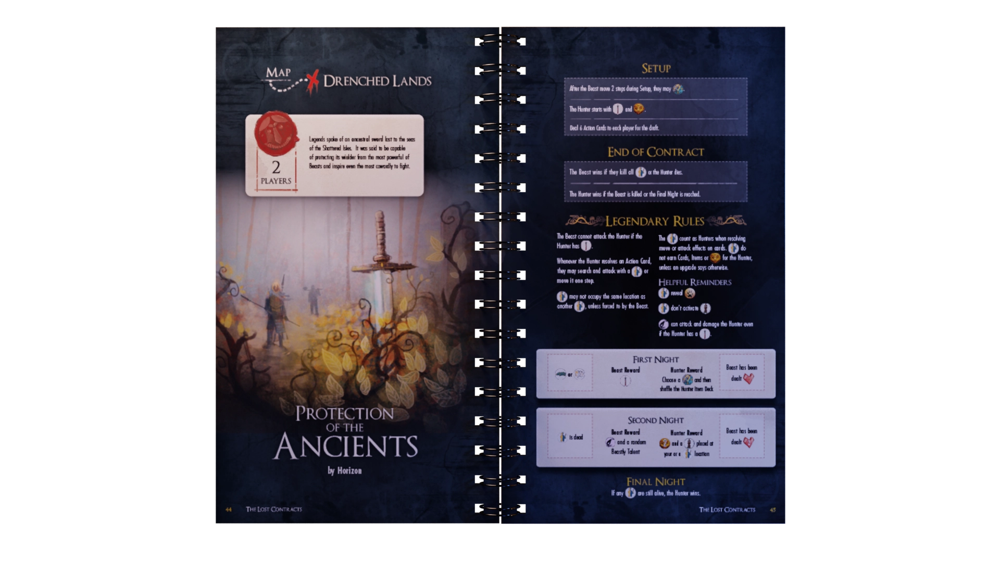
Design in collaboration with Oskar Lundkvist and Valeria Iezzi.